And other tidbits!
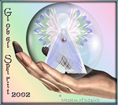

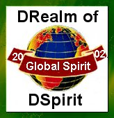 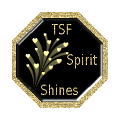
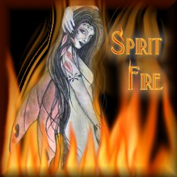
I'd like you to meet my Legend Spirits family! *smile*
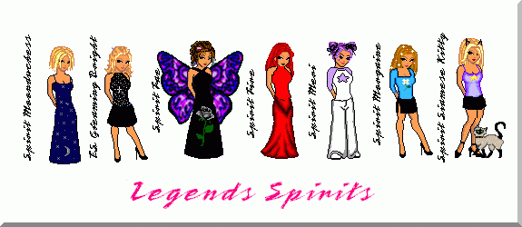
This portrait was done by Spirit Moonduchess!
It's a
beautiful Christmas present from her!
Thank you so much!
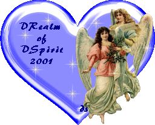
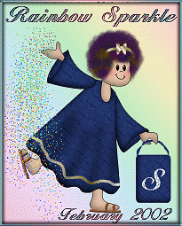
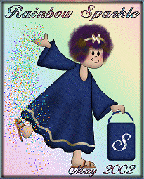 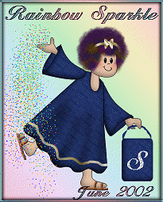
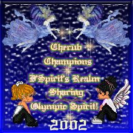
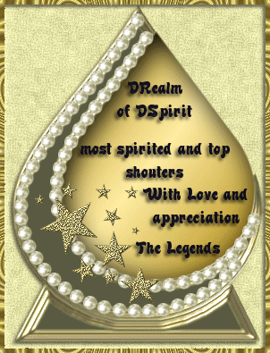
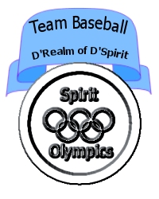
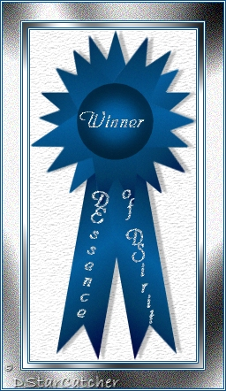
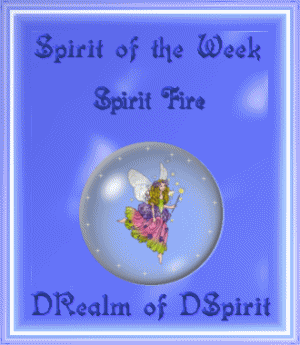 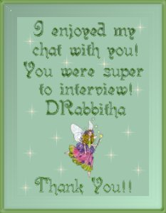


|
|